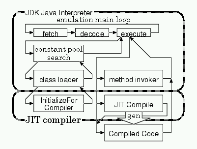
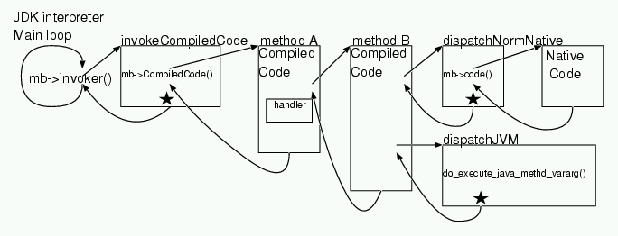

<!DOCTYPE HTML PUBLIC "-//W3C//DTD HTML 4.0 Transitional//EN"
                      "http://www.w3.org/TR/REC-html40/loose.dtd">
<html>
<head>
<link rel=stylesheet href="../../common.css" type="text/css">
<link rev=made href="mailto:webmaster@matsulab.is.titech.ac.jp">
<!--meta http-equiv="Content-Type" content="text/html; charset=iso-8859-1"-->
<meta http-equiv="Content-Type" content="text/html; charset=iso-2022-jp">
<title>OpenJIT Backend Compiler (Runtime) Internal Specification v.1.1.7</title>
<style type="text/css">
<!--
TABLE {
	margin-bottom:	40px;
}
TH {
	border-width: 1;
	padding: 5px;
	border-style: outset;
	background-color: #ccffcc;
}
TD {
	border-width: 1;
	padding: 5px;
	border-style: outset;
	background-color: #ffffcc;
}
P {
	text-align: justify;
}
-->
</style>
</head>

  <body>

<h1 class=banner>OpenJIT</h1>
<h1 class=subbanner>OpenJIT Backend Compiler (Runtime) Internal Specification version 1.1.7</h1>

<p class=right>
Kouya Shimura<br>
Fujitsu Laboratories<br>
kouya@flab.fujitsu.co.jp</p>

<p class=right>
Translation by Satoshi Matsuoka<br>
Tokyo Institute of Technology<br>
matsu@is.titech.ac.jp</p>

<p class=right>Friday, October 29, 1999</p>

    <h2>1. Introduction</h2>
    <p>This internal specification covers the runtime portion of the OpenJIT backend compiler for SPARC V8 CPU. We outline the structure of this specification document below. The OpenJIT Backend compiler largely consists of the compiler part and the runtime part; this document covers the runtime part.</p>

    <h2>2. Java Native Code API</h2>
    <p>The Java JDK has several APIs for JIT compilers. OpenJIT is plugged into a given JDK using this API. We first explain the API, and describe the implementation in OpenJIT.</p>

    <h3>2.1 JIT Compiler Initialization</h3>
    <p>When JDK starts up, it first reads the Java system class (<code>java.lang.System</code>), and then loads the <code>java.lang.Compiler</code> class. <code>Java.lang.Compiler</code> is defined as follows:</p>

<pre>
public final class Compiler {
    private Compiler() {} // don't make instances
    private static native void initialize();
    static {
        try {
            String library = System.getProperty("java.compiler");
            if (library != null) {
                System.loadLibrary(library);
                initialize();
            }
        } catch (Throwable e) {
        }
    }
...
}</pre>

    <p>When this class is loaded, the class initializer is executed, and looks for the property "<code>java.compiler</code>". On JDK 1.1.x, the user either specifies the compiler via a command-line option "<code>-Djava.compiler=</code>XXX", or sets the environment variable <code>JAVA_COMPILER</code>, allowing the system to dynamically link the library via <code>System.loadLibrary</code>. Then, the native method <code>initialize()</code> is invoked. This method is defined in C as follows:</p>

<pre>
void java_lang_Compiler_initialize (Hjava_lang_Compiler *this)
{
    void *address = (void *)sysDynamicLink("java_lang_Compiler_start");
    if (address != 0) {
        (*(void (*) (void **)) address) (CompiledCodeLinkVector);
    }
    compilerInitialized = TRUE;
}</pre>

    <p>By defining the function <code>java_lang_Compiler_start()</code> in the OpenJIT native library, this function is thereby invoked by the JVM, allowing proper initialization of OpenJIT. The argument <code>CompiledCodeLinkVector</code> passes the necessary values for JIT compilation; it essentially is a vector of hook functions for JIT compilation, and by modifying the vector appropriately, the JIT compiler is invoked appropriately by the JDK when needed. Some essential hook functions are described in Table 1.</p>

    <caption>Table 1: Some essential hook functions</caption>
    <table>
	<tr>
	  <th>Function name</th>
	  <th>Feature</th>
	</tr>
	<tr>
	  <td><code>InitializeForCompiler</code></td>
	  <td>On class load</td>
	</tr>
	<tr>
	  <td><code>invokeCompiledMethod</code></td>
	  <td>On method invocation</td>
	</tr>
	<tr>
	  <td><code>CompiledCodeSignalHandler</code></td>
	  <td>On signal occurrence</td>
	</tr>
	<tr>
	  <td><code>CompilerFreeClass</code></td>
	  <td>When class is no longer needed</td>
	</tr>
	<tr>
	  <td><code>CompilerCompileClass</code></td>
	  <td>Compilation of specified class</td>
	</tr>
	<tr>
	  <td><code>CompilercompileClasses</code></td>
	  <td>Compilation of specified classes</td>
	</tr>
	<tr>
	  <td><code>CompilerEnable</code></td>
	  <td>Enable Compiler</td>
	</tr>
	<tr>
	  <td><code>CompilerDisable</code></td>
	  <td>Disable Compiler</td>
	</tr>
	<tr>
	  <td><code>ReadInCompiledCode</code></td>
	  <td>Load pre-compiled code</td>
	</tr>
	<tr>
	  <td><code>PCinCompiledCode</code></td>
	  <td>For exception handling</td>
	</tr>
	<tr>
	  <td><code>CompiledCodePC</code></td>
	  <td>For exception handling</td>
	</tr>
	<tr>
	  <td><code>CompiledFramePrev</code></td>
	  <td>For exception handling</td>
    </table>

    <h3>2.2  Overview of JIT compilation process</h3>

<div></div><caption>Figure 1: Flow of JIT compilation</caption>

    <p>Figure 1 illustrates the overview of JIT compilation process. When Java is invoked with a JIT compiler specified, the native portion of the JDK is dynamically linked into the JVM. By setting the hook functions appropriately as described above, the class loader will always call the <code>InitializeForCompiler()</code> function on each class load.</p>
    <p><code>InitializeForCompiler</code>, in turn, modifies the invoker of all the methods defined for the class (except for the native and abstract methods) so that the JIT compiler is invoked for dynamic compilation from the bytecode to the native code. When the method is compiled, the method invocation flag is modified so that the compiled code is now executed directly, and passes on the control to the generated native code. Thereafter, JVM invokes the compiled native code directly by the virtue of the flag.</p>
    <p>When a compiled native code calls another compiled native code, the <code>CompiledCode</code> field of the <code>methodblock</code> structure is read and the control is transferred directly via a jump instruction.</p>
    <p>The compiled native method accumulates in memory. The space is reclaimed when the hook function <code>CompilerFreeClass</code> is called when the JDK actually deletes the class from memory. The hook function in turn frees the memory for the native code as well.</p>
    <p>We have overviewed the JIT compilation process. As we can see, the unit of dynamic compilation is each individual method, and compilation happens on the first time the method is invoked. By all mans one can have adaptive strategies to compile on nth invocation, etc.</p>

    <h3>2.3 JIT Compiler Initialization (<code>java_lang_Compiler_start</code>)</h3>
    <p>In OpenJIT, the initialization routine <code>java_lang_Compiler_start</code> performs the following task:</p>
    <ol>
      <li>Initialization of the compiler lock variable:
	<br>In a multithreaded environment one must prevent OpenJIT from compiling the same method with multiple threads at the same time. We thus use a lock variable (<code>_compile_lock</code>), which is initialized here.</li>
      <li>Load <code>org.OpenJIT.Sparc</code> class
	<br>In order to obtain the pointer to the OpenJIT class structure (<code>ClassClass</code> structure), the OpenJIT classes are loaded. OpenJIT instantiates the OpenJIT compiler classes before it starts compilation of a Java method; the pointer is required for this (*** $B0UL#$,$$$^$$$A(B)</li>
      <li>Loading of the <code>org.OpenJIT.ExceptionHandler</code> class
	<br>Similarly, in order to instantiate at compile time, we obtain the pointer to <code>org.OpenJIT.ExceptionHandler</code> class by loading it.</li>
      <li>Obtain pointer to the <code>OpenJIT_compile()</code> function
	<br>We next obtain the pointer to the upcall entry point for OpenJIT Java classes by calling the <code>ResolveClassConstant()</code> function, obtaining the <code>methodblock</code> structure for <code>OpenJIT_compile()</code>.</li>
      <li>Initialization of the <code>org.OpenJIT.Compile</code> class
	<br>We initialize several internal native variables such as debugging info variables, floating point constants, and class variables for entry point (address) of runtime routines (***).</li>
<!-- XXX: Check previous sentence. -->
      <li>Initialization of the <code>CompiledCodeLinkVector</code>
	<br>We set the essential hook functions as described in 2.1.</li>
      <li>Re-initialization Resetting of method invocation functions of the classes already loaded
	<br>Although not a problem for standard JIT compilers which are present from the point of invocation of the JDK***, for OpenJIT several system classes are already loaded when this initialization function is called. Such classes if left alone are never compiled if we merely set the hook functions in the <code>CompiledCodeVector</code>. Instead, we must re-initialize the classes already loaded by resetting the method invocation functions etc. of the already loaded classes, in order to allow them to be compiled as well.</li>
    </ol>

    <h3>2.4 Class Initialization (<code>OpenJIT_InitializeForCompiler</code>)</h3>
<pre>
static void OpenJIT_InitializeForCompiler(ClassClass *cb)</pre>
    <p>Given a class, set the invoker functions of all the methods except for the native methods and the abstract methods so that they are dynamically compiled on invocation. Also, in order to allow calls to a compiled method from another compiled method, the compilation must set the <code>CompiledCode</code> field of the <code>methodblock</code> structure.</p>
    <p>Also, we set the <code>CompiledCodeFlags</code> of the <code>methodblock</code> structure depending on the type of the return value of the method. This value is used in <code>dispatchVM()</code> function when the compiled native calls the JVM for interpretive execution.</p>
    <p>Furthermore, by setting a command-line option, we can restrict the classes and methods to be compiled by calling the function <code>match_compile_methods</code>. We pass the <code>methodblock</code> structure to the function, and if the return value is TRUE then the method is subject to compilation, whereas if FALSE then the method is not to be compiled.</p>
<!-- XXX: match_compile_methods may not exist in current implementation. -->

    <h3>2.5 Signal Handler (<code>OpenJIT_SignalHandler</code>)</h3>
<pre>
static void OpenJIT_SignalHandler(int sig, siginfo_t *info, ucontext_t *uc)</pre>
    <p>Called when a signal occurs. OpenJIT generates Java exceptions with Unix signals. This function looks at the signal for Java exceptions, and routes control to an appropriate handler. If it receives a signal that is irrelevant to Java exceptions, it simply returns. For details of the exception handling please refer to Section 5.</p>

    <h3>2.6 Freeing of Class (<code>OpenJIT_CompilerFreeClass</code>)</h3>
<pre>
static void OpenJIT_CompilerFreeClass(ClassClass *cb)</pre>
    <p>When JDK decides that a certain class is no longer necessary, this function is called, freeing the space occupied by the compiled native code.</p>

    <h3>2.7 Class Compilation (<code>OpenJIT_CompilerCompileClass</code>)</h3>
<pre>
static bool_t OpenJIT_CompilerCompileClass(ClassClass *cb)</pre>
    <p>Called from a java user program with the following: <code>java.lang.Compiler.compileClass(clazz)</code>. This forces compilation of all methods that have not been compiled in the given class.</p>

    <h3>2.8 Enabling of the JIT compiler (<code>OpenJIT_CompilerEnable</code>)</h3>
<pre>
static void OpenJIT_CompilerEnable()</pre>
    <p>Called from a java user program with the following: <code>java.lang.Compiler.enable()</code>. The methods that are called following this call will be compiled.</p>

    <h3>2.9 Disabling of the JIT compiler (<code>OpenJIT_CompilerDisable</code>)</h3>
<pre>
static void OpenJIT_CompilerDisable()</pre>
    <p>Called from a java user program with the following: <code>java.lang.Compiler.disable()</code>. The subsequent methods called after this call will not be compiled. Note that, for the default OpenJIT implementation where each method is compiled on its first invocation, the caller of this method will have been already compiled and thus will execute as compiled native code.</p>

    <h3>2.10 Compiled code execution test (<code>OpenJIT_PCinCompiledCode</code>)</h3>
<pre>
static bool_t OpenJIT_PCinCompiledCode(caddr_t *pc, struct methodblock *mb)</pre>
    <p>Judges whether the current execution is within a given method using the program counter and the <code>methodblock</code> structure. This function is used by the JDK when an exception occurs and it traces and displays the stacktrace of execution. If the method is being executed, then it returns TRUE, otherwise FALSE.</p>

    <h3>2.11 The Value of the Program Counter (<code>OpenJIT_CompiledCodePC</code>)</h3>
<pre>
static unsigned char *OpenJIT_CompiledCodePC(JavaFrame *frame, struct methodblock *mb)</pre>
    <p>Returns the value of the program counter given the frame and the <code>methodblock</code>. This function is used by the JDK when an exception occurs and it traces and displays the stacktrace of execution. </p>

NOTE: For OpenJIT, for simplification this function does not return the correct value of the PC, but rather returns the entry address of the compiled native code of given <code>methodblock</code>. Everything seems to work fine under this simplification for JDK 1.1.x and JDK 1.2, but other JDKs might break this assumption.
<!-- XXX: `...native code of given methodblock' is better than `...native code of the method block', isn't it? -->

    <h3>2.12 Generating Java Stack Frame (<code>OpenJIT_CompiledFramePrev</code>)</h3>
<pre>
static JavaFrame *OpenJIT_CompiledFramePrev(JavaFrame *frame, JavaFrame *buf)</pre>
    <p>Converts the native compiled code stackframe into Java stackframe used by the JDK (<code>JavaFrame</code>). This function is used by the JDK when an exception occurs and it traces and displays the stacktrace of execution.</p>
    <p>The generated code by the OpenJIT follows the C stackframe convention, and this function performs the conversion under that assumption. For JDK 1.1.x, the <code>JavaFrame</code> structure only utilizes the current method and the vars frame; thus, in practice these are the only two fields set by the function. As the converted frame must use the buf memory region, the function sets the values and returns buf. </p>

    <h2>3. Method Invocation</h2>
    <p>For each method, both JIT compilation and and transfer of control to the native method happens at the point of the subject method invocation.</p>
    <p>The JVM interpreter loop is structured as follows. When a method is invoked, the invoker function of the methodblock structure mb is called. Under interpretive execution, this in turn calls the JVM to generate a new Java stack frame. The first argument of o <code>invoker()</code> is a pointer to a class object for static method calls, and is the pointer to the invoked object on normal method calls. The second argument <code>mb</code> is a pointer to the <code>methoblock</code> structure, and the third argument <code>args_size</code> indicates the types of the arguments. The 4th argument <code>ee</code> is a pointer to the execution environment structure <code>ExecEnv</code>.</p>
<pre>
while(1) {
    get opcode from pc
    switch(opcode) {
    ...(various implementation of the JVM bytecodes)
    callmethod:
        mb->invoker(o, mb, args_size, ee);
        frame = ee->current_frame; /* setup java frame */
        pc = frame->lastpc; /* setup pc*/
        break;
    }
}</pre>

    <h3>3.1 Invoking the Compiler from the JDK</h3>
    <p>As mentioned earlier, we substitute the value of the invoker to <code>OpenJIT_invoke</code> when the class is loader. The <code>OpenJIT_invoke</code> function is defined as follows in C:</p>

<pre>
bool_t OpenJIT_invoke(JHandle *o, struct methodblock *mb,
                      int args_size, ExecEnv *ee);</pre>
    <p>This function in turns upcalls the <code>OpenJIT_compile</code> to dynamically compile the method. Thereafter, the control is transferred to <code>mb->invoker</code>, transferring control to the just compiled method.</p>
 
    <h3>3.2 OpenJIT compile</h3>
    <p>A method is compiled and the invoker as well as the <code>CompiledCode</code> fields of the <code>methodblock</code> structure are initialized.</p>
<pre>
void OpenJIT_compile(struct methodblock *mb)</pre>
    <p>This function performs the followings:</p>
    <ol>
      <li>Mutual exclusion to prevent simultaneous compilation of the same method. As mentioned earlier, we prevent multiple threads from compiling the same method at the same time with proper mutual execution using a compile lock.</li>
      <li>Setup of invoker and <code>CompiledCode</code> fields in the <code>methodblock</code> structure.  When a method is invoked during compilation, we set the invoker and <code>CompiledCode</code> so that the interpreter is invoked. This allows natural handling of recursive self-compilation of OpenJIT compiler classes.</li>
      <li>Invocation of the dynamic compiler (<code>OpenJIT_Sparc_compile()</code>). The Java method is upcalled to perform the actual compilation.</li>
      <li>When the compilation is successful: We set the stub function in the invoker field of the <code>methodblock</code> structure so that the compiled native code is invoked.</li>
      <li>When compilation fails: The <code>methodblock</code> field values are restored to their original values.</li>
    </ol>

    <h3>3.3 Invoking the compiled code from the JVM</h3>
    <p>The <code>CompileMethod</code> function sets the value of the invoker to one of the following stub functions according to the return type of the method. The last letter of the function indicates the return type:$B!!(BV:void, I:int, J:long, F:float,$B!!(BD:double. Other types such as Object or short,char,byte that could be encoded in 1 word use I as a default.</p>

<pre>
bool_t invokeCompiledCodeV(JHandle *o, struct methodblock *mb,
                           int args_size, ExecEnv *ee)
bool_t invokeCompiledCodeI(JHandle *o, struct methodblock *mb,
                           int args_size, ExecEnv *ee)
bool_t invokeCompiledCodeJ(JHandle *o, struct methodblock *mb,
                           int args_size, ExecEnv *ee)
bool_t invokeCompiledCodeF(JHandle *o, struct methodblock *mb,
                           int args_size, ExecEnv *ee)
bool_t invokeCompiledCodeD(JHandle *o, struct methodblock *mb,
                           int args_size, ExecEnv *ee)</pre>

    <p>These stub function performs the following:</p>
    <ol>
      <li>Saving of the Java frame.</li>
      <li>Setting up of the equivalent native code stackframe.</li>
      <li>Calling of the function <code>makeCompiledFrame</code>. A dummy JVM frame is created for exception handling and Java reflection, etc.</li>
      <li>Necessary exception of the native frame by manipulating the stack pointer %sp.
	<br>The <code>invokeCompiledCode</code> is four arguments; should there be more arguments in the call, then the save area for the arguments must be allocated on the stack by bumping the %sp.</li>
      <li>Set pointer to the <code>methodblock</code> structure in register %3: Required for compiled code calling convention. For details, refer to the descriptions of the compiled code to compiled code details.</li>
      <li>Calling of the <code>CompiledCode</code>.
	<br>For SPARCs, we pass up to 6 arguments via registers. As such, we fetch 6 values from the JVM operand stack and store them into registers prior to the call. Note that for the current implementation, we ALWAYS pass six values, rather than case analyzing for fewer arguments. In practice this has proven to be effective.</li>
      <li>After method execution, the return value is pushed onto the JVM frame according to the return type. The JVM stack is adjusted as well, and the frame is restored.</li>
      <li>Check for exceptions. If an exception has occurred, return TRUE otherwise FALSE (***to whom?)</li>
    </ol>
    <p>Steps 2~4 are already packaged in the Macro <code>INVOKE_COMPILED_CODE</code>.</p>

    <h3>3.4 Invoking Compiled Code from Compiled Code</h3>
    <p>As mentioned earlier, control is passed to the <code>CompliedCode</code> field of the <code>methodblock</code>. The C-style description of the call is as follows:</p>
<pre>
mb->CompiledCode(obj, arg0, arg1, arg2, ...)</pre>
    <p>The arguments are passed via SPARC function call convention, i.e., the first 6 arguments are passed in the registers %o0 ~ %o5. Note that, for Java native code, %o is reserved for the object or the class pointer of the call, so the register usage actually is shifted by one. As an example for the following Java program:</p>
<pre>
obj.method(arg0, arg1, arg2, arg3, arg4, arg5)</pre>
    <p>%o0 will have obj, %o1 will be assigned arg0, ..., %o5 will be assigned arg4, whereas arg5 is allocated onto the stack as caller-save register. </p>
    <p>Similarly, the method return values also follow the SPARC function call convention, i.e., for integers, the value is returned in %i0, for longs (64-bits) %0 and %1, float in %f0, and doubles are returned in %f0 and %f1.</p>
    <p>What differs from C function calls is that, we must always set the <code>methodblock</code> of the method to be called into the %g3 register. This value is necessary for virtual function calls (<code>OpenJIT_invokevirtual</code>, <code>OpenJIT_invokevirtualobject_quick</code>), as well as for exception handling, upon which the value must be saved in the native stack.</p>

    <h3>3.5 Invoking the Compiler from the Compiled Code</h3>
    <p>The methods to be compiled by the JITs already have the value of the <code>CompiledCode</code> field in the <code>methodblock</code> changed to <code>dispatchJITCompiler</code> on class loading time. When this method is invoked for the first time from within the compiled code, the <code>dispatchJITCompiler</code> is invoked. (***) This function, if written in C, would have the following interface:</p>
<!-- XXX: Shimura-san says written in assembler is wrong. -->
<pre>
? dispatchJITCompiler(? arg0, ? arg1, ? arg2, ...)</pre>
    <p>The types of the arguments and the return value depends on the method, and is indeterminate at compile time. In practice, we use assembly for efficiency to code in the following way:</p>
<pre>
dispatchJITCompiler:
save %sp,-112,%sp
call compileMethod,0 ! compileMethod(mb)
mov %g3,%o0
ld [%g3+.off_CompiledCode],%l1 ! jump to mb->CompiledCode
jmp %l1
restore</pre>
    <p>Firstly, <code>compileMethod</code> is invoked. The <code>compileMethod</code> does the compilation and sets the <code>CompiledCode</code> field. Then, this field is re-invoked with the same arguments, effectively executing the compiled native code.</p>

    <h3>3.6 Invoking the Interpreter (JVM) from the compiled code</h3>
    <p>When the <code>CompiledCode</code> field of the <code>methodblock</code> structure is set to be <code>dispatchJVM</code>, then the following function is called to transfer the control to the interpreter. This is used when compilation fails, or the compilation is restricted due to the compiler option.</p>
<pre>
void dispatchJVM(? arg0, ? arg1, ? arg2, ...)</pre>
    <p>JVM facilitates the following function to call a Java method from native code in general:</p>
<pre>
long do_execute_java_method(ExecEnv *ee, void *obj, char *method_name,
                            char *signature, struct methodblock *mb,
                            bool_t isStaticCall, ...);</pre>
    <p><code>DispatchJVM</code> interfaces the calling convention of the compiled native methods and this function:</p>
    <ol>
      <li>Extract the <code>methodblock</code> structure from %g3</li>
      <li>Save the argument registers onto the stack</li>
      <li>Set the <code>methodblock</code> structure of the caller into the dummy Java frame. This is required for reflection and exception handling.</li>
      <li>Call <code>do_execute_java_method</code></li>
      <li>Set the return values into registers according to the return type.</li>
    </ol>

    <h3>3.7 Invoking Native Method from Compiled Code</h3>
    <p>When the method is originally native to begin with, the <code>code</code> field of the <code>methodblock</code> points to the native code to be executed. A call can be thus made in the following way in C:</p>
<pre>
optop = (*(stack_item *(*)(stack_item*, ExecEnv*))mb->code)(optop, ee)</pre>
    <p>The first argument is a pointer to the operand stack, and the second argument is a pointer to the execution environment <code>ExecEnv</code>. As a result, when we call a native method from the compiled native code, we must assign the register arguments into operand stack similarly to the call to the JVM. Also, the returned value on the operand stack must be placed back in the register. For this purpose, we define 5 stub functions according to the return type:</p>

<pre>
void dispatchNormNativeV(...)
int dispatchNormNativeI(...)
int64_t dispatchNormNativeJ(...)
float dispatchNormNativeF(...)
double dispatchNormNativeD(...)</pre>
    <p>When the native method is a synchronized method, it further requires the monitor lock/unlock operations. For efficiency, we further define a set of separate stub functions to cover this case:</p>

<pre>
void dispatchSynchNativeV(...)
int dispatchSynchNativeI(...)
int64_t dispatchSynchNativeJ(...)
float dispatchSynchNativeF(...)
double dispatchSynchNativeD(...)</pre>
    <p>These functions perform the followings:</p>

<!-- XXX: Insufficient(?) descriptions -->
    <ol>
      <li>Obtain the value of the <code>methodblock</code> from %g3 to obtain the starting address of the native method.</li>
      <li>Save the register arguments onto the native stack (Not the Java operand stack). These will become the second argument of the native call.</li>
      <li>Obtain the value <code>of ExecEnv</code></li>
      <li>Obtain the value of the <code>methodblock</code> of the caller, and set to the dummy JVM frame. Again, this is required for reflection and exception handling.</li>
      <li>For synchronized methods, call <code>MonitorEnter</code></li>
      <li>Call the native method</li>
      <li>For synchronized methods, call <code>MonitorExit</code></li>
      <li>Check whether an exception has occurred. If so, call <code>handle_exception</code>, which actually controls the transfer entirely and never returns.</li>
      <li>Obtain the return value of <code>mb->code</code> from the operand stack and place it appropriately into the register according to the return type.</li>
    </ol>
NOTE: Steps 2 ~ 8 are defined as a macro <code>DISPATCH_NATIVE</code>

    <h2>4. Self Modifying Code</h2>
    <p>Java bytecodes refers to classes, instance variables, and methods via symbol names. Symbols are stored in a structure called constant pool. Thus, on bytecodes execution, one must search the constant pool with the given symbols as a key, and obtain the actual address. This search is quite costly, as one must lock the constant pool region for multithreaded execution. Moreover, constant pool references occur quite frequently, and the cost of the search could dominate the overall execution time.</p>
    <p>The JVM implementation solves this problem by modifying the bytecode on the fly. That is to say, the bytecode for constant pool access is modified to an equivalent so-called quick bytecode, which refers to the absolute address after the name has been resolved. For example, the bytecode instruction:</p>
<pre>
getfield #22 &lt;Field Obj var&gt;</pre>
    <p>pushes the object variable value onto the operand stack. When this instruction is first executed, the constant pool is always searched for the constant pool index #22. As a result, when we find that this variable can be accessed at a 4-byte offset from the object header, then the JVM modifies the code at runtime to the following quick version:</p>
<pre>
getfield_quick 4</pre>
    <p>then subsequently re-executes the instruction. From that point on, the quick instruction is always used, since the constant pool does not change over the execution of the program, effectively eliminating the lookup cost.</p>

    <p>However, for native code, it is more difficult to eliminate this cost of lookup by naive application of a similar technique. A simple method would be to search all the possible symbol values in the constant pool and resolve them at once at compile time. However, constant pool resolution is not mere simple symbol resolution, but rather incurs other processing such as class loading and initialization; thus, this strategy could change the semantics of the program by changing the initialization order of classes.</p>
    <p>The viable option is to change the native instruction code in the same manner as the interpreter. However, it is much more difficult to do for native code, which involves several native instructions per each bytecode. Since the length of the instruction sequence cannot change, this could involve insertion of several NOP instructions. Moreover, the change must be atomic, requiring some form of mutual exclusion. Moreover, the change must propagate across code caches on different processors in a multiprocessor environment.</p>
  </p>The basic solution is as follows. For SPARCs, we place the CALL instruction to the constant pool resolution routine preceding a delay slot which contains the MOV instruction to set the index number of the symbol onto a register:</p>
<pre>
call  resolve
mov   #22,%o0</pre>
    <p>When this sequence is executed, the resolve() routine is called. There, after the constant pool is searched and the address corresponding to the index is found, the two instructions are rewritten so that now the instruction sequence places the the address (or the offset) value into a register:</p>
<pre>
sethi %hi(offset), %o0
or    %o0, %lo(offset),%o0</pre>
    <p>Then, the <code>resolve()</code> routine returns with the resolved address in the %o0 register. The instruction immediately following the two rewritten instructions merely accesses the memory using %o0. For SPARCs, we could further optimize this as small offsets can be encoded into one instruction, and the load instruction contains a displacement field.</p>

    <h3>4.1 Two Instruction Modification</h3>
    <p>Although the basic idea was given, in practice for SPARCs the MOV instruction only accepts signed 13 bits as index values. In JVM, the index value can be as large as 16 bits; so, we have employed the SETHI instruction instead of the MOV instruction, allowing the usage of 22 bits. One caveat is that the encoded index value is the value obtained by left shifting the bits by 10 bits.</p>
<pre>
call resolver           -> sethi %hi(offset),%o0
sethi (index<<10),%o0   -> or %o0,%lo(offset),%o0</pre>
    <p>The following functions actually searches the constant pool and resolves the offsets:</p>

    <h4>4.1.1 OpenJIT_resolveField</h4>
<pre>
int OpenJIT_resolveField(int index)</pre>
    <p>The JVM <code>getfield</code> and <code>putfield</code> instructions are translated to call this function, which performs the followings:</p>
    <ol>
      <li>Check for self modification (<code>CHECK_SELF_MODIFYING</code>)</li>
      <li>Right shift the index by 10bits</li>
      <li>Extract the <code>methodblock</code> of the caller. We obtain the address of the constant pool from this <code>methodblock</code> structure. Also, we set the address value into the JVM dummy frame in case exception happens.</li>
      <li>Search and resolve the constant in the pool (<code>RESOLVE_CLASS_CONST</code>)</li>
      <li>Check whether we have access rights to the field. If the field is static then generate an exception.</li>
      <li>Obtain the offset, and modify the instruction as stated above (<code>PATCH_SET_O0</code>)</li>
      <li>Return the offset value</li>
    </ol>

    <h4>4.1.2 OpenJIT_resolveStaticField</h4>
<pre>
int OpenJIT_resolveStaticField(int index)</pre>
    <p>The JVM <code>getstatic</code> and <code>putstatic</code> bytecodes are translated to call this function.</p>
    <ol>
      <li>Check for self modification (<code>CHECK_SELF_MODIFYING</code>)</li>
      <li>Right shift the <code>index</code> by 10bits</li>
      <li>Extract the <code>methodblock</code> of the caller. We obtain the address of the constant pool from this <code>methodblock</code> structure. Also, we set the address value into the JVM dummy frame in case exception happens.</li>
      <li>Search and resolve the constant in the pool (<code>RESOLVE_CLASS_CONST</code>)</li>
      <li>Check whether we have access rights to the field. If the field is NOT static then generate an exception.</li>
      <li>If the field type is long or double (64-bits)
	<br>Obtain the offset, and modify the instruction as stated above (<code>PATCH_SET_O0</code>)
	<br>Return the <code>u.static_address</code> of the <code>fieldblock</code>.</li>
      <li>If the field type is not 64-bits
	<br>Obtain the offset, and modify the instruction as stated above (<code>PATCH_SET_O0</code>)</li>
    </ol>

    <h4>4.1.3 OpenJIT_resolveString</h4>
<pre>
int OpenJIT_resolveString(int index)</pre>
    <p>For JVM bytecodes <code>ldc</code> and <code>ldc_w</code>, if the constant pool type is <code>CONSTANT_String</code>, then the bytecodes are translated to call the function.</p>
    <ol>
      <li>Check for self modification (<code>CHECK_SELF_MODIFYING</code>)</li>
      <li>Right shift the <code>index</code> by 10bits</li>
      <li>Extract the <code>methodblock</code> of the caller. We obtain the address of the constant pool from this <code>methodblock</code> structure. Also, we set the address value into the JVM dummy frame in case exception happens.</li>
      <li>Search and resolve the constant in the pool (<code>RESOLVE_CLASS_CONST</code>)</li>
      <li>Obtain the offset, and modify the instruction as stated above (<code>PATCH_SET_O0</code>)</li>
      <li>Return the address value</li>
    </ol>

    <h3>4.2 One Instruction Modification</h3>
    <p>We modify only the CALL instruction. This is only employed when a new class is loaded on method call. This series of instructions is a combination of setting the pointer to the method block into the %g3 register, and CALLing the invoker function. Here, only the CALL instruction is modified.</p>
<pre>
sethi %hi(mb),%g3       -> sethi %hi(mb),%g3
call old_invoker        -> call new_invoker
or %g3,%lo(mb),%g3      -> or %g3,%lo(mb),%g3</pre>
    <p>The functions below are subject to such one-instruction modification:</p>

    <h4>4.2.1 OpenJIT_invokeinterface</h4>
<pre>
int OpenJIT_invokeinterface(...)</pre>
    <p>The JVM <code>invokeinterface</code> bytecode is translated to call this function, which performs the followings:</p>
    <ol>
      <li>Check for self modification (<code>CHECK_SELF_MODIFYING</code>)</li>
      <li>Extract the <code>methodblock</code> of the caller.</li>
      <li>Search and resolve the constant in the pool (<code>RESOLVE_CLASS_CONST</code>)</li>
      <li>Patch the instruction to call <code>OpenJIT_invokeinterface_quick</code></li>
      <li>Jump to <code>OpenJIT_invokeinterface_quick</code>.</li>
    </ol>

    <h4>4.2.2 OpenJIT_invokeinterface_quick</h4>
    <p>The JVM invokeinteface_quick instruction is translated to invoke this function. Also, as indicated in Section 4.1.1, it is invoked subsequently to the invocation of <code>OpenJIT_invokeinterface</code>. The %g3 register must contain the predicted value of the method table. The procedure is almost same as when JVM processes the <code>invokeinterface_quick</code> bytecode, but differs in the following points:</p>
    <ul>
      <li>The predicated value is obtained by shifting %g3 right by 24 bits</li>
      <li>When the method is found, we modify the instruction in order to set the predicted value.</li>
    </ul>
    <p>We modify the instruction that sets the %g3 register, preceding the call instruction which called this function; the modification is such that the predicted value is shifted by 24 bits, and set to the upper 8-bits of the %g3 register. Since the predicated value could be old and stale, we do not lock the instruction upon modification.</p>

    <h4>4.2.3 OpenJIT_invokespecial</h4>
<pre>
void OpenJIT_invokespecial(...)</pre>
    <p>The JVM <code>invokespecial</code>, <code>invokenonvirtual_quick</code> bytecodes are translated to call this function. The function is effectively used when the method does not change for the given call site irrespective of the type of the object.</p>
    <ol>
      <li>Check for self modification (<code>CHECK_SELF_MODIFYING</code>)</li>
      <li>Extract the <code>methodblock</code> of the caller.</li>
      <li>Check the class and the <code>methodblock</code> structure, and find out whether we are invoking the methods in the ancestor classes (super).</li>
      <li>For super calls, modify the instruction to be a call to <code>OpenJIT_invokesuper_quick</code>, and jump to <code>OpenJIT_invokesuper_quick()</code>.</li>
      <li>If it is not a super call, either compile the method to be called, or load it in the case it is a native method. (<code>RESOLVE_NATIVE_OR_COMPILE</code>)</li>
      <li>Modify the instruction to directly call <code>mb->CompiledCode</code>.</li>
      <li>Jump to mb->CompiledCode</li>
    </ol>

    <h4>4.2.4 OpenJIT_invokesuper_quick</h4>
<pre>
void OpenJIT_invokesuper_quick(...)</pre>
    <p>The JVM <code>invokesuper_quick</code> bytecode is translated to call this function. Also, it might be called after a call to the <code>OpenJIT_invokespecial</code> function. It performs essentially the same procedure as the JVM for this instruction.</p>

    <h4>4.2.5 OpenJIT_invokestatic</h4>
<pre>
void OpenJIT_invokestatic(...)</pre>
    <p>The JVM <code>invokestatic</code> instruction (in case it does require constant pool resolution) and the <code>invokestatic_quick</code> instruction are translated to call this function, which performs the followings, allowing direct, fast calls to static methods: </p>
    <ol>
      <li>Check for self modification (<code>CHECK_SELF_MODIFYING</code>)</li>
      <li>Extract the <code>methodblock</code> of the caller.</li>
      <li>Either compile the callee method or load the native method as specified in the classfile (<code>RESOLVE_NATIVE_OR_COMPILE</code>).</li>
      <li>Modify the instruction to make a direct jump to <code>mb->CompiledCode</code></li>
      <li>Make the jump to <code>mb->CompiledCode</code>.</li>
    </ol>

    <h4>4.2.6 OpenJIT_invokevirtual</h4>
<pre>
void OpenJIT_invokevirtual(...)</pre>
    <p>For <code>invokevirtual</code> bytecodes that does not require constant pool resolution, and the <code>invokevirtual_quick</code> instructions are translated to call this function. The procedure is similar to <code>OpenJIT_invokestatic</code>, but the call target of the self-modified code differs in the following way:</p>
    <dl>
      <dt>When the method is private:</dt>
      <dd>We rewrite the method in the same manner as the <code>OpenJIT_invokestatic</code> to make a jump to <code>mb->CompiledCode</code>. This allows direct jump to the target method.</dd>
      <dt><code>java.lang.Object</code> methods:</dt>
      <dd>We rewrite the target of the call to <code>OpenJIT_invokevirtaulobject_quick</code></dd>
      <dt>Other cases:</dt>
      <dd>We rewrite the target of the call to <code>OpenJIT_invokevirtual_quick</code></dd>
    </dl>

    <p>Subsequently, the case analysis becomes unnecessary, speeding up the virtual call.</p>

    <h3>4.3 Three Instruction Modification</h3>
    <p>We modify the instruction sequence consisting of three instructions, which involves a method invocation with constant pool resolution. The general sequence is as follows:</p>
<pre>
call old_invoker        -&gt; sethi %hi(mb),%g3
sethi %g3,index&lt;&lt;10     -&gt; call new_invoker
illtrap                 -&gt; or %g3,%lo(mb),%g3	/* delay slot */</pre>
    <p>The following functions are subject to 3 instruction modification:</p>

    <h4>4.3.1 OpenJIT_invokespecial_resolve</h4>
<pre>
void OpenJIT_invokespecial_resolve(...)</pre>
    <p>The JVM <code>invokespecial</code> bytecode is translated to call this function. After constant pool resolution, we perform the same process as the <code>OpenJIT_invokespecial</code> function.</p>

    <h4>4.3.2 OpenJIT_invokestatic_resolve</h4>
<pre>
void OpenJIT_invokestatic_resolve(...)</pre>
    <p>The JVM <code>invokestatic</code> bytecode is translated to call this function. After constant pool resolution, we perform the same process as the <code>OpenJIT_invokestatic</code> function.</p>

    <h4>4.3.3 OpenJIT_invokevirtual_resolve</h4>
<pre>
void OpenJIT_invokevirtual_resolve(...)</pre>
    <p>The JVM <code>invokevirtual</code> bytecode is translated to call this function. After constant pool resolution, we perform the same process as the <code>OpenJIT_invokevirtual</code> function.</p>

    <h3>4.4 Three Instruction Modification (Modification of %o0)</h3>
    <p>We modify the instruction sequence consisting of three instructions, which involves an access to class object with constant pool resolution. The general sequence is as follows. For this kind of sequences, for the modified target of the call instruction, the first argument of the call is the resolved address of the class object.</p>
<pre>
call old_func           -&gt; sethi %hi(mb),%o0
sethi %o0,index&lt;&lt;10     -&gt; call new_func
illtrap                 -&gt; or %g3,%lo(mb),%o0	/* delay slot */</pre>
    <p>The following functions are subject to 3 instruction modification with %o0:</p>

    <h4>4.4.1 OpenJIT_new</h4>
<pre>
HObject *OpenJIT_new(int index)</pre>
    <p>The JVM <code>new</code> bytecode is translated to call this function. It performs the following steps:</p>
    <ol>
      <li>Check for self modification (<code>CHECK_SELF_MODIFYING</code>)</li>
      <li>Shift the <code>index</code> right by 10 bits</li>
      <li>Constant pool resolution (<code>RESOLVE_CLASS_CONST</code>)</li>
      <li>Check the access rights to the class, and for illegal access generate an exception</li>
      <li>Self-modify the call so that the new target is <code>OpenJIT_new_quick</code> (<code>PATCH_SET_O0_and_CALL</code>)</li>
      <li>Physically allocate an object from memory (same as <code>OpenJIT_new_quick</code>)</li>
      <li>Return the pointer to the new object.</li>
    </ol>

    <h4>4.4.2 OpenJIT_anewarray</h4>
<pre>
HArrayOfObject *OpenJIT_anewarray(int index, int size)</pre>
    <p>The JVM <code>anewarray</code> bytecode is translated to call this function. It performs steps similar to <code>OpenJIT_new</code>, self-modifies the target to <code>OpenJIT_anewarray_quick</code>, and jumps to the <code>OpenJIT_anewarray_quick</code>.</p>

    <h4>4.4.3 OpenJIT_multianewarray</h4>
<pre>
HArrayOfObject *OpenJIT_multianewarray(int index, int dimensions,
                                       stack_item *optop)</pre>
    <p>The JVM <code>multianewarray</code> bytecode is translated to call this function. It performs steps similar to <code>OpenJIT_new</code>, self-modifies the target to <code>OpenJIT_multianewarray_quick</code>, and jumps to the <code>OpenJIT_multianewarray_quick</code>.</p>

    <h4>4.4.4 OpenJIT_checkcast</h4>
<pre>
void OpenJIT_checkcast(int index, JHandle *h)</pre>
    <p>The JVM <code>checkcast</code> bytecode is translated to call this function. It performs steps similar to <code>OpenJIT_new</code>, self-modifies the target to <code>OpenJIT_checkcast_quick</code>, and jumps to the <code>OpenJIT_checkcast_quick</code>.</p>

    <h4>4.4.5 OpenJIT_instanceof</h4>
<pre>
bool_t OpenJIT_instanceof(int index, JHandle *h)</pre>
    <p>The JVM <code>instanceof</code> bytecode is translated to call this function. It performs steps similar to <code>OpenJIT_new</code>, self-modifies the target to <code>OpenJIT_instanceof_quick</code>, and jumps to the <code>OpenJIT_instanceof_quick</code>.</p>

    <h3>4.5 Self-modifying code in OpenJIT</h3>
    <p>Since JVM is inherently multithreaded, caution is required for atomic updating of successive sequence of multiple instructions. If the self-modification is not atomic, other threads might try to execute the half-cooked instruction sequence, resulting in a critical error.</p>
    <p>The current JVM supports two types of thread system. One is the green thread, and the other is the native thread. The green thread only works for uniprocessor machines, and the context switching occurs only at fixed, safe locations, and thus such problems do not occur. For native threads, however multiple threads might be executing on different processors, resulting in partially rewritten instruction sequences to be executed. Thus, it is extremely important to guarantee the atomicity of self-modification in an efficient manner. OpenJIT implements such an atomic update in the following way:</p>

    <h4>4.5.1 Macro <code>CHECK_SELF_MODIFYING()</code></h4>
    <p>This macro checks whether the call instruction to the function which uses the macro has been modified or not. If it has been modified, then the control returns to the modified instruction of the call site, which is re-executed.</p>

    <h4>4.5.2 Macro <code>PATCH_CODE(CODE, OFFSET)</code></h4>
    <p>This macro modifies the instruction whose offset is <code>OFFSET</code> from the call instruction which called the function which uses this macro. Subsequently, the instruction cache is flushed. For example, <code>PATCH_CODE(code,4)</code> modifies the delay slot of the call site which called the function.</p>

    <h4>4.5.3 Modifying multiple instructions atomically</h4>
    <p>Multiple instructions are modified atomically in the following way. We assume that the first instruction of the sequence of instructions to be modified is a CALL instruction, followed by NOP instructions. The function which had been called by the CALL instruction modifies the instruction sequence.</p>
    <ol>
      <li>First, the CALL instruction is modified to unconditional branch instruction to effectively spin lock on the instruction. This modification is atomic, and any thread which executes the jump instruction goes into infinite spin.</li>
      <li>Change the NOP instructions to desired instruction sequence.</li>
      <li>Change the unconditional branch instruction to the desired instruction. The threads that had been spinning on the branch instruction will resume with the execution of the new instruction sequence.</li>
    </ol>
    <p>We illustrate this scheme below:</p>

    <table>
	<tr>
	  <th ></th>
	  <th colspan="7">Rewriting sequence of multiple instructions</th>
	</tr>
	<tr>
	  <th>label</th>
	  <th>Step 1</th><th rowspan="9">-&gt;</th>
	  <th>Step 2</th><th rowspan="9">-&gt;</th>
	  <th>Step 3</th><th rowspan="9">-&gt;</th>
	  <th>Step 4</th>
	</tr>
	<tr>
	  <th></th>
	  <th>...</th>
	  <th>...</th>
	  <th>...</th>
	  <th>...</th>
	</tr>
	<tr>
	  <th></th>
	  <th>Inst0</th>
	  <th>Inst0</th>
	  <th>Inst0</th>
	  <th>Inst0</th>
	</tr>
	<tr>
	  <th>modify:</th>
	  <th>CALL A</th>
	  <th>Branch modify</th>
	  <th>Branch modify</th>
	  <th>Inst1</th>
	</tr>
	<tr>
	  <th></th>
	  <th>NOP</th>
	  <th>NOP</th>
	  <th>Inst2</th>
	  <th>Inst2</th>
	</tr>
	<tr>
	  <th></th>
	  <th>NOP</th>
	  <th>NOP</th>
	  <th>Inst3</th>
	  <th>Inst3</th>
	</tr>
	<tr>
	  <th></th>
	  <th>NOP</th>
	  <th>NOP</th>
	  <th>Inst4</th>
	  <th>Inst4</th>
	</tr>
	<tr>
	  <th></th>
	  <th>Inst5</th>
	  <th>Inst5</th>
	  <th>Inst5</th>
	  <th>Inst5</th>
	</tr>
	<tr>
	  <th></th>
	  <th>...</th>
	  <th>...</th>
	  <th>...</th>
	  <th>...</th>
	</tr>
    </table>

    <p>One problem with this scheme is when multiple threads execute the CALL A instruction. However, since both threads will be modifying the instruction sequence (INST1 , ... , INST4) identically, this will not cause a problem (It is a little bit more subtle than this***).</p>

    <h2>5. Exception Handling</h2>
    <p>For efficient execution, OpenJIT backend does not generally check for exceptions except for a few instances where explicit runtime checks are required. Instead, exceptions are checked and processed using the Unix signaling mechanism.</p>
    <!-- XXX: adjust text around images -->
<div></div><caption>Figure 2: Flow of Execution</caption>
    <p>Figure 2 indicates how the compiled native code executes. We must check for exception occurrence when the transfer of control occurs between the compiled native code and other native code such as the JVM interpreter and runtime routines, and native methods. For example, In Figure(exception), we must check for exception for each point in the control flow marked by a star. On the other hand, for exceptions occurring with the compiled native code, we generally employ the Unix signals, and do not explicit check for exception occurrence.</p>

    <h3>5.1 Checking for Exceptions using Unix Signals</h3>
    <p>By setting the Java Native Code API, the following function is called when a Unix signal occurs:</p>
<pre>
static void OpenJIT_SignalHandler(int sig, siginfo_t *info, ucontext_t *uc)</pre>
    <p>Below are the possible exceptions that might occur in runtime. Other signals are not JVM exceptions, but rather a compiler or a JVM bug.</p>
    <table>
	<tr>
	  <th>Signal</th>
	  <th>Purpose</th>
	</tr>
	<tr>
	  <td>SIGFPE</td>
	  <td>zero division</td>
	</tr>
	<tr>
	  <td>SIGSEGV</td>
	  <td>null pointer, stack overflow</td>
	</tr>
	<tr>
	  <td>SIGILL</td>
	  <td>array index out of bounds</td>
	</tr>
    </table>

    <p>Within the <code>OpenJIT_SignalHandler</code> function, in order to check that the signal was indeed generated by a Java exception and not a compiler or a JVM bug, we check the instruction that caused the exception, and its operand address. For each type of exception, we perform the check in the following way, and by calling the <code>setcontext()</code> system call, we setup the calling frame so that the instruction causing the exception behaves as if it had called the exception generation function.</p>

    <h4>5.1.1 Zero Division</h4>
    <p>The signal SIGFPE is raised, and the exception code <code>info->si_code</code> is either FPE_INTOVF or FPE_INTDIV. If so, signal handler sets up the context so that it seems as if the following function had been called from the instruction that caused the exception.</p>
<pre>
void catchZeroDivide(unsigned char *pc)</pre>

    <h4>5.1.2 Null Pointer</h4>
    <p>The signal SIGSEGV is raised, and the exception code <code>info->si_code</code> is SEGV_MAPERR. In addition, the base register of the instruction that caused the exception is 0. Here is the exception generation function:</p>
<pre>
void catchNullPointer(unsigned char *pc)</pre>

    <h4>5.1.3 Stack Overflow</h4>
    <p>The signal SIGSEGV is raised, and the exception code <code>info->si_code</code> is SEGV_MAPERR. In addition, the instruction that caused the exception is <code>ld [%sp + constant]</code>. Here is the exception generation function:</p>
<pre>
void catchStackOverflow(unsigned char *pc)</pre>

    <h4>5.1.4 Array index out of bounds</h4>
    <p>The signal SIGILL is raised, and the instruction that caused the exception is a trap instruction, and the trap code is ST_RANGE_CHECK. Here is the exception generation function:</p>
<pre>
void catchArrayIndexOutOfBounds(unsigned char *pc, int index)</pre>
    <p>This function is slightly different, in that the index of the array must be given as the second parameter. For this reason, before we perform <code>setcontext</code>, we must check the value of the register which was used as a operand to calculate the out-of-bounds condition.</p>

    <h3>5.2 Macro <code>FIND_EXCEPTION_FRAME(pc, ee)</code></h3>
    <p>This is a macro used by the exception generation functions described above in order to identify the method that caused the exception. It performs the following steps:</p>
    <ol>
      <li>Flush the register window</li>
      <li>Trace the native stack
	<br>Walk the stack until the frame for the compiled native code is found.</li>
      <li>Set the pointer to the <code>methodblock</code> structure into the dummy JVM frame. </li>
      <li>Setup for the <code>fillInStackTrace</code> (described later in Section 5.4.).</li>
    </ol>

    <h3>5.3 Jumping into an exception handler (<code>handle_exception</code>)</h3>
<pre>
bool_t handle_exception (ExecEnv *execEnv)</pre>
    <p>This function traces the compiled native code stack, and finds the corresponding exception handler, and jumps to the handler. As is with C <code>longjump()</code>, it makes a jump leapfrogging the nested function calls. Because SPARC has register windows, they must be restored appropriately during leapfrogging. Here are the steps:</p>
<pre>
while(1) {
    /* delete the stackframe of the runtime routine */
    while(%i7(address of the caller) is within the runtime routine) {
        restore /* recover the register window */
    }
    if (%i7(return address) is not a compiled native code) {
        /* Return to the JVM interpreter loop */
        return FALSE;
    }

    /* Set the lastpc. Needed when returning to the interpreter loop? */
    ee->current_frame->lastpc = %i7

    Extract the pointer to the methodblock structure from %fp, and
    set it to the variable mb

    /* Find the exception handler for the caught exception within mb */
    new_pc = JITProcedureFindThrowTag(ee, mb, ee->exception.exc, %i7)
    if (new_pc != 0) {
        /* An exception handler is found! */
        exceptionClear(ee) /* Clear the exception flag */

        /*
         * The exception handler for the compiled native code assume
         * that the pointer to the object that caused the exception
         * is in %i7
         */
        %i7 = ee->excetion.exc
        restore /* restore the register window */
        jump new_pc /* Jump to the exception handler */
    }
    /* Exception handler is not found */
    if (mb is a synchronized method) {
        /* unlock the monitor lock */
        /* The monitor object is stored in %fp[-1] */
        monitorExit(%fp[-1])
    }
    restore
}</pre>

    <h3>5.4 <code>fillInStackTrace</code></h3>
    <p>JDK calls the <code>SignalError</code> function when an exception occurs. This function in turns calls <code>fillInStackTrace()</code>,. Also, <code>java.lang.Throwable</code> class has a method <code>fillInStackTrace</code>, allowing the user program to obtain the status of the current Java method, and the trace of the stackframe.</p>
    <p>The code generated by the OpenJIT compiler does not generate a Java frame when compiled native code is called from another native code. As a result, JVM cannot trace the stackframe. To solve this problem, the JDK prepares the following API:</p>
<pre>
JavaFrame *JITCompiledFramePrev(JavaFrame *frame, JavaFrame *buf)</pre>
    <p>Other than <code>fillInStackTrace</code>, this function is used to obtain the trace of the stackframe. JVM basically uses the following algorithm to walk the stack to obtain the trace:</p>

<pre>
{
  JavaFrame *frame, buf;
  frame = ExecEnv-&gt;current_frame;
  while(frame) {
    if (frame-&gt;current_method-&gt;fb.access & ACC_MACHINE_COMPILED) {
      frame = CompiledFramePrev(frame, &buf);
    } else {
      frame = frame-&gt;prev;
    }
  }
}</pre>
    <p>Thus, before <code>JITCompiledFramePrev</code> is called, <code>ExecEnv</code> (the execution environment structure) current_frame must have the Java fame of the compiled native code. For this purpose, when there is a possibility that an exception may occur upon calling a JVM function from the OpenJIT runtime routine, we must also set the JVM frame in the <code>ExecEnv->current_frame</code>.</p>
    <p>For OpenJIT, we judged that it is too expensive to generate a JVM frame each time this happens. Instead, we generate a dummy JVM frame only when the control flow transfers from the compiled native code into the internals of the JVM, and set it to <code>ExecEnv->current_frame</code>. When the OpenJIT runtime routine calls a JVM function, we merely set the <code>current_method</code> of the dummy frame.</p>

    <h2>6. Other Runtime Functions</h2>
    <p>We show the other OpenJIT runtime functions that are called from the compiled native code that the OpenJIT compiler generates. The compiled native code may also call a C library function or a JVM function. The table below indicates where the called functions are being defined.</p>

    <table>
	<tr>
	  <th>JVM Instruction</th>
	  <th>Runtime Function</th>
	  <th>Library</th>
	</tr>
	<tr>
	  <td>anewarray_quick</td>
	  <td>HArrayOfObject *OpenJIT_anewarray_quick(ClassClass *array_cb, int size)</td>
	  <td>OpenJIT</td>
	</tr>
	<tr>
	  <td>athrow</td>
	  <td>void OpenJIT_athrow(HJava_lang_Object *obj)</td>
	</tr>
	<tr>
	  <td>checkcast_quick</td>
	  <td>void OpenJIT_checkcast_quick(ClassClass *cb, JHandle *h)</td>
	  <td>OpenJIT</td>
	</tr>
	<tr>
	  <td>d2l</td>
	  <td>int64_t __dtoll(double d)</td>
	  <td>C</td>
	</tr>
	<tr>
	  <td>dcmpg</td>
	  <td>int OpenJIT_dcmpg(stack_item *p)</td>
	  <td>OpenJIT</td>
	</tr>
	<tr>
	  <td>dcmpl</td>
	  <td>int OpenJIT_dcmpl(stack_item *p)</td>
	  <td>OpenJIT</td>
	</tr>
	<tr>
	  <td>drem</td>
	  <td>double OpenJIT_drem(stack_item *p)</td>
	  <td>OpenJIT</td>
	</tr>
	<tr>
	  <td>f2l</td>
	  <td>int64_t __ftoll(float f)</td>
	  <td>C</td>
	</tr>
	<tr>
	  <td>fcmpg</td>
	  <td>bool_t OpenJIT_fcmpg(float *p)</td>
	  <td>OpenJIT</td>
	</tr>
	<tr>
	  <td>fcmpl</td>
	  <td>bool_t OpenJIT_fcmpl(float *p)</td>
	  <td>OpenJIT</td>
	</tr>
	<tr>
	  <td>frem</td>
	  <td>float OpenJIT_frem(float *args)</td>
	  <td>OpenJIT</td>
	</tr>
	<tr>
	  <td>instanceof</td>
	  <td>bool_t OpenJIT_instanceof(int index, JHandle *h)</td>
	  <td>OpenJIT</td>
	</tr>
	<tr>
	  <td>l2d</td>
	  <td>double OpenJIT_l2d(signed hi, unsigned lo)</td>
	  <td>OpenJIT</td>
	</tr>
	<tr>
	  <td>l2f</td>
	  <td>float OpenJIT_l2f(signed hi, unsigned lo)</td>
	  <td>OpenJIT</td>
	</tr>
	<tr>
	  <td>lcmp</td>
	  <td>bool_t OpenJIT_lcmp(long long x, long long y)</td>
	  <td>OpenJIT</td>
	</tr>
	<tr>
	  <td>ldiv</td>
	  <td>int64_t __div64(int64_t x, int64_t y)</td>
	  <td>C</td>
	</tr>
	<tr>
	  <td>lmul</td>
	  <td>int64_t __mul64(int64_t x, int64_t y)</td>
	  <td>C</td>
	</tr>
	<tr>
	  <td>lrem</td>
	  <td>int64_t __rem64(int64_t x, int64_t y)</td>
	  <td>C</td>
	</tr>
	<tr>
	  <td>lshl</td>
	  <td>uint64_t longOpenJIT_lshl(signed hi, unsigned lo, unsigned b)</td>
	  <td>OpenJIT</td>
	</tr>
	<tr>
	  <td>lshr</td>
	  <td>uint64_t longOpenJIT_lshr(signed hi, unsigned lo, unsigned b)</td>
	  <td>OpenJIT</td>
	</tr>
	<tr>
	  <td>lushr</td>
	  <td>uint64_t longOpenJIT_lushr(signed hi, unsigned lo, unsigned b)</td>
	  <td>OpenJIT</td>
	</tr>
	<tr>
	  <td>monitorEnter</td>
	  <td>void monitorEnter(unsigned int key)</td>
	  <td>JDK</td>
	</tr>
	<tr>
	  <td>monitorExit</td>
	  <td>void monitorExit(unsigned int key)</td>
	  <td>JDK</td>
	</tr>
	<tr>
	  <td>multianewarray_quick</td>
	  <td>HObject *OpenJIT_multianewarray_quick(ClassClass *array_cb, int dimensions, stack_item *optop)</td>
	  <td>OpenJIT</td>
	</tr>
	<tr>
	  <td>new_quick</td>
	  <td>HObject *OpenJIT_new_quick(ClassClass *cb)</td>
	  <td>OpenJIT</td>
	</tr>
	<tr>
	  <td>newarray</td>
	  <td>JHandle *OpenJIT_newarray(int type, int size)</td>
	  <td>OpenJIT</td>
	</tr>
    </table>

    <h2>7. Conclusion</h2>
    <p>We covered the runtime structure of the OpenJIT backend system. For the details of how the JVM instructions are translated, and runtime functions are called, the readers are referred to the files in <code>org/OpenJIT/Sparc.java</code>. The layout of the stackframe of the compiled native code is described in a companion document OpenJIT Backend Compiler Internal Specification.</p>

<hr>
    <address><a href="mailto:openjit@is.titech.ac.jp">openjit@is.titech.ac.jp</a></address>
<!-- Created: Sat Oct 30 01:35:47 JST 1999 -->
<!-- hhmts start -->
Last modified: Sat Oct 30 18:31:00 JST 1999
<!-- hhmts end -->
  </body>
</html>
